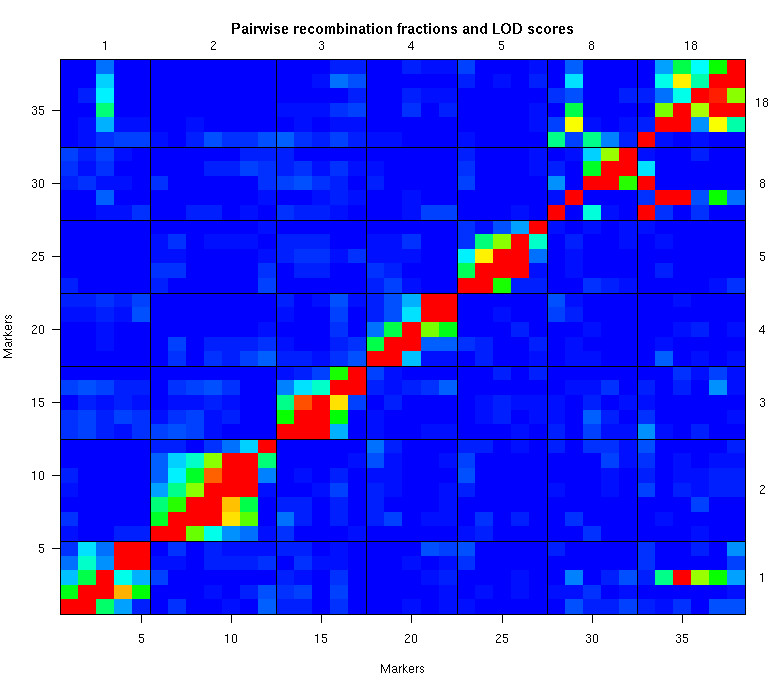

[ Home | Download | FAQ | Status | Bugs | Sample data | Tutorials | Book | Manual | Citation ]
Estimated recombination fractions for all pairs of markers (on selected chromosomes), along with LOD scores for the test of r = 1/2. (The recombination fractions are in the upper left triangle; LOD scores are in the lower right triangle.) Red indicates a large LOD score or a small recombination fraction, while blue is the opposite. Note that a marker on chromosome 8 appears to be switched with a marker on chromosome 18. Further, a marker on chromosome 1 likely belongs on chromosome 18.

[ Home | Download | FAQ | Status | Bugs | Sample data | Tutorials | Book | Manual | Citation ]